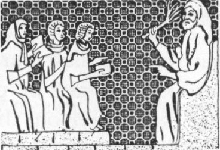

Sacred Texts Judaism
Buy this Book at Amazon.com
|

The meaning of the bitter herb, from the Sarajevo Haggadah |
The Union Haggadahed. The Central Conference of American Rabbis[1923] |
This is the text of a Haggadah, a book which describes the Seder dinner service at Pesach (Passover). The moving, participatory ceremony remembers the story of the liberation of the Jews from Egypt. This edition is a Reform Haggadah published in the early 20th century in the United States. It includes practical notes about staging the ceremony, and an appendix which describes the historical context of the celebration.
This online edition includes all of the gorgeous black and white illustrations and initials, (credited to Isidore Lipton in the appendix). The printed edition includes the Hebrew text and about forty pages of sheet music which had to be left out of this online presentation for technical reasons. Incidental Hebrew in the English text is presented using Unicode.